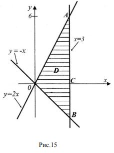

Розглянемо задачу обчислення об’єму криволінійного циліндру. Нехай z = f(x, y) – невід’ємна, неперервна в області D функція. У тривимірному просторі рівняння z = f(x, y) визначає деяку поверхню Ω, яка проектується на площину xOy в область D . Тіло G , яке обмежено зверху поверхнею Ω, знизу областю D з межею L, з боків – циліндричною поверхнею з напрямною L і твірними, які паралельні осі Oz, називають криволінійним циліндром (рис.8).
Знайдемо об’єм криволінійного циліндра.
1. Розіб’ємо область D довільним чином на n*m ділянок D_i_j з кусковогладкими межами, L_i_j, (i=1,n), j(1,m) Таким чином, область D буде покрита сіткою, де D_i_j − клітинка сітки. Позначимо діаметр кожної клітинки d_i_j , а її площу − ∆S_i_j . У кожній клітинці D_i_j довільним чином виберемо точку M. Через межі L_i_j проведемо циліндричні поверхні G_i_j із твірними, паралельними осі Oz, і з висотою, яка дорівнює f − стовпчики G_i_j .
Кількість стовпчиків G_i_j буде n*m , об’єм кожного з яких
Тоді для знаходження об’єму V криволінійного циліндра G будемо мати приблизну рівність
Сума яка має вигляд
називається інтегральною сумою.
Нехай d − найбільше з чисел d_i_j . Очевидно, якщо d → 0, то, зокрема, n,m → ∞, для значення об’єму тіла дістанемо
Вираз праворуч називають подвійним інтегралом від функції f (x,y) за областю D і позначають
Отже, для об’єму циліндра G маємо
В цьому полягає геометричний зміст подвійного інтеграла.
Узагальнюючи конструкцію, застосовану при обчисленні об’єму циліндра, приходимо до наступного означення подвійного інтеграла за умови, що z = f(x,y) вже довільна функція, яка визначена в області D.
Означення. Якщо існує скінченна границя інтегральної суми
коли найбільший з діаметрів ділянок прямує до нуля, яка не залежить ані від способу розбиття області D на ділянки, ані від вибору точок у середині кожної ділянки, то її називають подвійним інтегралом за областю D від функції f і позначають
Якщо функція f (x,y) неперервна в області D, то подвійний інтеграл існує
Оскільки границя інтегральної суми за умови неперервності функції f (x,y) не залежить від способу розбиття області D на ділянки, то область D можна розбивати на ділянки D_i_j прямими, які паралельні осям координат
Нехай ∆D_i_j – прямокутник зі сторонами
що належить області D (рис.9). Його площа дорівнює Δx_i Δy_j
Такому розбиттю відповідає інтегральна сума
Тоді за означенням подвійного інтеграла
чим і обґрунтовується позначення dxdy як міри (площі) елементарної ділянки.
Обчислити подвійний інтеграл
область D обмежена прямими x = 3, y = -x, y = 2x.
Розв’язок. Обчислення подвійного інтеграла зведемо до обчислення повторного інтегралу.
Перш за все побудуємо область інтегрування (рис.15). Знайдемо точки перетину ліній, що обмежують область інтегрування, розв’язуючи відповідні системи рівнянь:
Виберемо порядок інтегрування, пам’ятаючи, що зовнішній інтеграл повинен мати сталі межі інтегрування, а у внутрішнього інтеграла межі інтегрування будуть функції, що залежать від змінної зовнішнього інтеграла. Задана область D правильна у напрямі осі Оу, тому природно вибрати змінну х змінною зовнішнього інтеграла. Для заданої області D інтервал зміни змінної х буде 0 ≤ 𝑥 ≤ 3 (рис.15). Тепер, щоб визначити як змінюється змінна у, коли 𝑥∈[0,3] будемо проводити через точки відрізку [0,3] на осі х довільні прямі, паралельні осі Оy, рухаючись по осі х від точки 0 до точки 3. Всі ці прямі будуть перетинати область D, при цьому точки входу цих прямих в область D будуть лежати на прямій 𝑦 = −𝑥, а точки виходу − на прямій y = 2x (рис. 16). Таким чином, для заданої області D, коли змінна х прямує від x_1 = 0 до x_2 = 3, змінна у змінюється від y_1(x) = -x до y_2(x) = 2x (це і є межі інтегрування внутрішнього інтеграла).
Отже, заданий подвійний інтеграл запишеться у вигляді повторного інтеграла:
Почнемо з обчислення внутрішнього інтеграла. Інтегруючи по y, змінну x вважаємо сталою:
Тепер обчислимо зовнішній інтеграл від функції, яку отримали при обчисленні внутрішнього інтеграла:
Зауважимо, що можна було б вибрати у в якості змінної зовнішнього інтеграла, але задана область D не є правильною у напрямі осі Ох, тому довелось би розбити область D на дві правильні області у напрямі осі Ох (ОАC та ОCВ) а, отже, для обчислення заданого інтеграла треба було б обчислити два повторних інтеграли. Тому при виборі порядку інтегрування потрібно завжди враховувати, який спосіб для обчислення найзручніший.